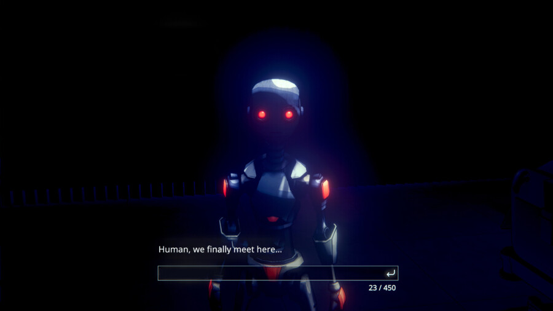

Uncover the Smoking Gun
The culminating exhibition of The Plot Thickens: Storytelling in Gaming, a multisite exhibition, is the presentation of Uncover the Smoking Gun by South Korea-based studio ReLU Games.
Uncover the Smoking Gun is set in the near sci-fi noir future where robots are ubiquitous. The player is a detective seeking to solve mysteries through interrogation. Unlike the dialogue tree mode of communication found in most games, Uncover the Smoking Gun requires players to type questions directly to characters who respond dynamically in real time, heralding an early, promising form of AI-powered NPCs in games.
Presented at venues across Michigan and Illinois, The Plot Thickens explores diverse approaches to narrative and storytelling in games. It is organized by Chicago Gamespace and West Shore Community College and curated by Jonathan Kinkley and Eden Ünlüata-Foley.
Uncover the Smoking Gun
April 11, 2026
Hours: Saturday 11am – 5pm
Location: Chicago Gamespace, 2418 W Bloomingdale Ave, Chicago, IL